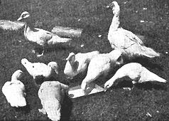
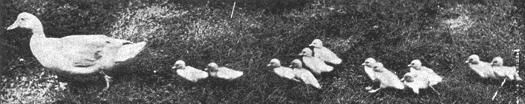
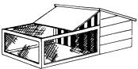
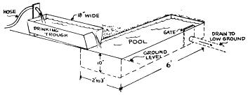

Ducks Are Easy To Raise
How to plan your duck raising program, from the Have-More Plan.
By the Mother Earth News editors
March/April 1970
PEOPLE are always giving us something. We got our trio of Muscovy ducks one day when a lady who lives near our Country Bookstore in Noro ton, Connecticut, moved. They were breeders and she didn't want to have them killed. Knowing that we had a small farm, she thought we might like them.
There is a good deal to be said for making ducks your second poultry project, particularly if you have any kind of small stream or pond on your place, although neither is necessary. One of the unusual things about ducks is that they are well adapted to either a small place or to large-scale commercial production.
Don't start a duck project unless your family is fond of duck. If you're anywhere near as successful as we've been, you'll have a lot of duck. The trio that was given to us has produced over 25 ducklings in the first six months. Incidentally, Muscovy ducks are better eating, we think, than the ordinary Pekin variety that you get in the market.
Anyway, ducks do furnish delicious variety for the table. Many people like duck eggs, too, especially for cooking. Ducks require relatively little care and are practically free of disease problems. They are efficient and economical meat producers, gaining weight rapidly even when allowed to forage for much of their food.
You have three choices as to how to plan your duck raising program. You can keep a small flock of breeders the year around. You can buy day-old ducklings and brood them like baby chicks, but with less heat and care. Or you can buy duck eggs and hatch them out under hens.
Keeping A Small Flock Of Breeders
If you just plain like ducks and like having them around; if you would like having some duck eggs for eating or cooking in addition to having duck meat; if you have some grass forage land; if you have a stream or pond - keep a small flock of breeders.
You don't have to qualify on all these points to keep a flock of breeders, but if you do, then your flock will practically keep themselves, providing you with plenty of tasty meals from spring until late fall.
If you don't have forage, ducks can be fenced in, but will require more feed. If you don't have the stream or pond, you can provide a sunken trough, half-barrel or pan. You can raise ducks successfully without any water, but they like water to wash themselves in and it is said to be best if the eggs are moistened regularly during the setting. This moistening occurs naturally whenever the ducks return to the nest with wet feathers from bathing.
For housing almost any kind of shelter will do. A small coop with a door like that on page 39 would be ideal, because if you want to gather eggs it is a good idea to keep ducks shut in until 9 or 10 a. m. Supply litter on floor for warmth and dryness.
Your ducks will build their own nests in the shelter or around the place and will each hatch twelve to fifteen or even more ducklings at a sitting, and they will probably do it at least twice a year. They may produce eggs the year around, heavily from early spring through July. The number of ducklings you let them hatch will be determined by how many eggs they lay and how many you take to eat.
One drake for up to five or six ducks is a workable arrangement, but you will probably want to start with a "trio" of one drake and two ducks. A small flock will give you all the ducks that you want.
Ducks of most breeds are ready to eat from the age of about 10 weeks on. The commercial raisers force their flocks to a peak of growth and fatness at about nine weeks and then market the whole flock at one time. After that age the ducks will go into a moult and gain weight very slowly no matter how much they are fed. This is no great disadvantage in the small home-size flock which is foraging for much of its food anyway, and the usual practice is simply to start eating the ducks when they are big enough, and to go on eating them as needed until they are all gone, saving only the breeders chosen to be carried over to the next year.
Your original trio of breeders may be kept for two or three years or even longer, but more probably you will select from your whole flock a new drake and new ducks for breeders every year or two. You will probably want to buy or "swap" in new blood occasionally. There are many breeds of ducks, but the three breeds most suitable for the home flock are probably the Pekin, the Muscovy and the Indian Runner. The Muscovy is the largest, the Pekin next. The Runner lays the most eggs. Neither the Pekin nor the Runner is a good "sitter," and you would probably have to hatch their eggs under hens.
A trio of one or two year old Muscovy ducks, of good healthy stock, will cost you about $10.00, and you can obtain them by mail from breeders who advertise or perhaps you know some one who raises them near you. Day-old Muscovies will probably cost from 40 cents to 60 cents apiece.
If you can't get the duck pellets, the simplest thing to do is to feed the same mash and grains you feed your chickens. A wet mash is sometimes fed, but this is an extra "wrinkle." When growing ducks are not able to forage, keep feed before them most of the time as you would for chickens.
If your ducks have a stream, pond or fairly large, clean bathing trough, you don't need to provide other drinking facilities. If they don't, you should provide a reasonably deep (4 inches anyway and at least 12 to 15 inches across) supply of water. This is because of the peculiar nasal construction of ducks. They need to be able to get most of their bill in water when drinking.
Buying Day-Old Ducklings
You can get day-old ducklings through your feed dealer, from a neighbor who raises ducks, or by mail from people who advertise in farm journals. The season when they are easiest to get runs from April through July.
By starting a dozen ducklings two or three times during the season, the first batch early in April, you can have a steady supply of eating ducks coming along from mid-June until late fall. And again, of course, if you have a quick freezer, you can have roast duck any day of the year you choose.
You can brood your ducklings in the same way you brood chicks, except that they require artificial heat for only three weeks - a shorter time than chicks do.
Setting Duck Eggs Under A Broody Hen
There are points to watch carefully in this method. One is that you obtain the broody hen at just the right time. She should be in the first week of her broodiness because duck eggs take about 4 weeks (a week longer than chicken eggs) to hatch, and she may tire of the job unless you get her when she has just gone broody. (Muscovies take 5 weeks to hatch.)
You should also care for the hen faithfully during the period of incubation. Take hen off nest daily, feed and water her. Usually she will stay off only five minutes to eat and drink, then get back on eggs herself. If she doesn't put her back before eggs cool. Dust her well with insect powder at the beginning. You must also be sure the eggs are moistened (sprinkled with water) the last few days of the period.
A hen can usually hatch only seven to nine duck eggs, because they are so much bigger than chicken eggs. A rat-proof coop with wire run, as illustrated, is advisable for the hatching period of about 4 weeks and also for the brooding period of about 3 weeks.
|
 Here are our quackless Muscovy ducks. We chose this breed because they aren't noisy; they have a better flavor, we think; they're very hardy and free from disease. Our trio of drake and two ducks produced 18 young ducks on their first hatchings. These ducklings are about 6 weeks old. |
 The Muscovy is a good big duck, the mature drake weighing 10 pounds and the duck 7 pounds, and they are a very hardy, self-reliant breed. The Indian Runners weigh only 4 to 4 1/2 pounds at maturity. One important advantage of the Muscovy is that it is quackless and won't bother your neighbors. Muscovies are fliers, though, and if your fencing isn't pretty high, you may have to clip the outermost feathers from one wing. |
 Coop and wire run suitable for hatching and brooding of ducklings with a hen. The bars keep hen confined, but let ducklings get sunlight and fresh air safe from dogs, cats, rats, etc. Top lifts up to allow cleaning, feeding, watering. |
|
 Cement bathing and drinking trough which can be easily kept clean. Only while ducks are sitting on eggs is water for bathing really necessary. |
 Ducks are messy feeders and will waste less if pellets instead of mash are used. Here is cross section of pellet hopper used by commercial duck raisers. It can be made any size to hold from one to several hundred pounds of pellets, thus saving much labor. ""Flaps"" can be closed to cut down time pellets are available to the ducks, thus forcing them to forage. |
|